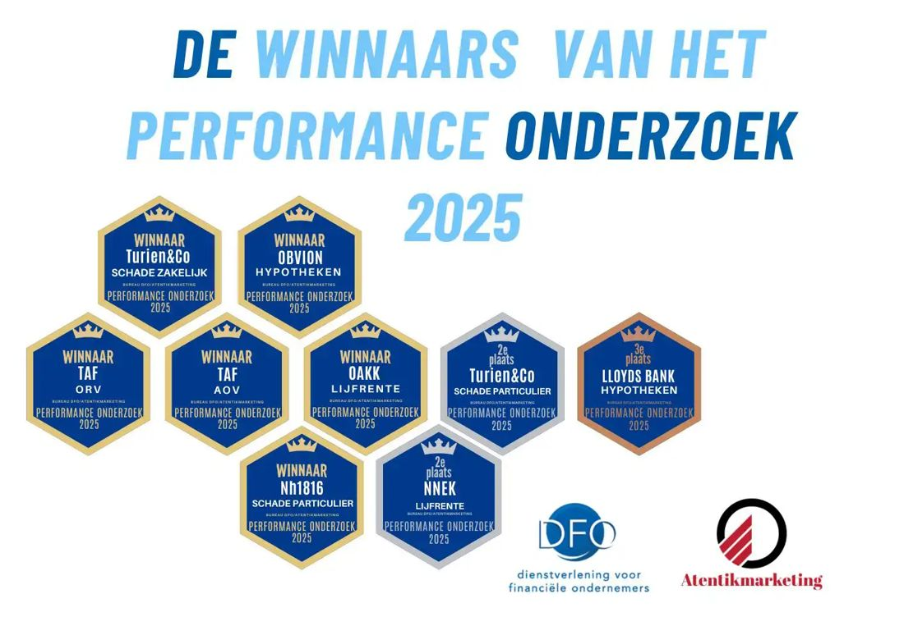
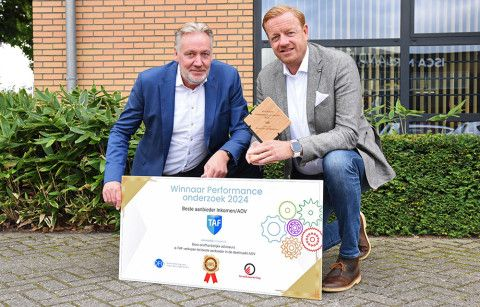
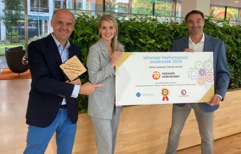
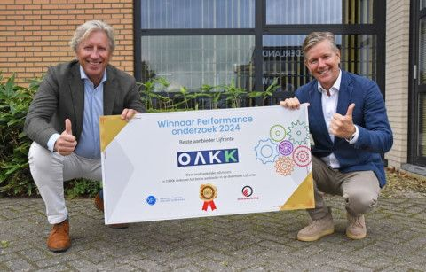
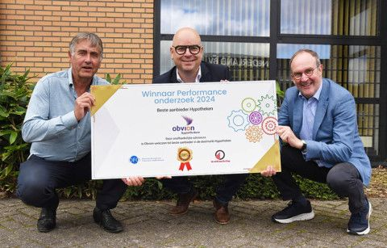
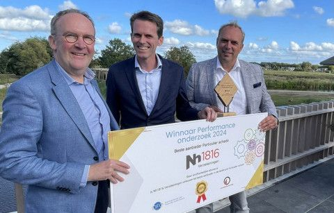

Performance Onderzoek 2026 Samenvattingen Meting I en II
De winnaars van meting 1 en 2 bieden hierbij de samenvatting aan van het onderzoek. Je kunt ze gratis downloaden.
Winnaars Performance onderzoek 2025
De winnaars uit het landelijk onderzoek Performance aanbieders 2025, hebben het mogelijk gemaakt dat wij enkele interessante resultaten uit het onderzoek, in een samenvatting, kunnen aanbieden.
Download hier de gratis samenvatting van het Performance onderzoek 2025 voor financieel adviseurs
Het Performance Onderzoek geeft een beeld hoe het intermediair op dit moment een groot aantal aanbieders op specifieke dienstverleningsaspecten waardeert. Wij zien dat elk jaar de beoordelingen van de meeste dienstverleningsaspecten licht stijgen.

Oktober: Maand van de Performance
Download hier de gratis samenvatting van het Performance onderzoek 2024 voor financieel adviseurs

Lees hier de vakpaper met ontwikkelingen AOV
Winnaar TAF: De Basisverzekering Arbeidsongeschiktheid Zelfstandigen (BAZ) staat in de steigers. Hoewel de invoering nog even op zich laat wachten, is dit hét moment om je klanten te helpen de juiste keuze te maken. De BAZ is in het leven geroepen om elke IB-ondernemer in Nederland een standaard basisdekking te bieden bij arbeidsongeschiktheid.

Lees hier de vakpaper met ontwikkelingen Zakelijke Schade
De zakelijke en particuliere verzekeringsmarkt wordt in Nederland bediend door een servicegericht, gespecialiseerd en onafhankelijk intermediair distributiekanaal. In de strategie van Nationale-Nederlanden Schade Intermediair staat de intermediaire distributie centraal."

Lees hier de vakpaper met ontwikkelingen Lijfrente
Winnaar OAKK: "Een toenemend aantal werkenden heeft geen of beperkte toegang tot collectieve pensioenoplossingen. Daarentegen wordt door de vergrijzing een steeds grotere groep afhankelijk van ‘pensioeninkomen’. Dat is, gecombineerd met een nog steeds relatief lage rente die hoger is dan de inflatie, een voedingsbodem voor onrust bij mensen over hun financiële toekomst."

Lees hier de vakpaper met ontwikkelingen Hypotheken
Het is de hoogste tijd voor een goed gesprek met Obvion Hypotheken, winnaar in de categorie ‘Hypotheken’ in het DFO Performance Onderzoek 2024. Waar is dit resultaat aan te danken? “Bij Obvion staat de adviseur op 1. Deze prijs is de waardering van adviseurs voor onze dienstverlening en bevestiging om de ingeslagen weg vooral samen te blijven volgen,”

Lees hier de vakpaper met ontwikkelingen Schade Particulier
De Beste Particuliere Schadeverzekeraar! Ook in 2024 heeft Nh1816 Verzekeringen deze waardering gekregen van de adviseurs. Dat zet de teller op zestien. Iets waar ze in Oudkarspel trots op zijn. Net als de NPS score, die met 92 ten opzichte van gemiddeld 40 ongekend hoog is. Wat is het geheim achter die succesformule?
Week van de Serviceprovider
Website Serviceproviders: neem eens een kijkje op deze website
en vergelijk de Serviceprovider op kwaliteit, snelheid aanbod en waardering
Franchise Hypotheken: Financieel Fit
Winnaar
Schade Particulier en Zakelijk: BSB Volmachten
Winnaar
VCN Hypotheken
Winnaar
VCN Kredieten
Winnaar
VCN Verzekeringen
Winnaar